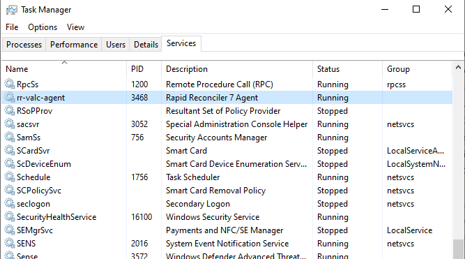
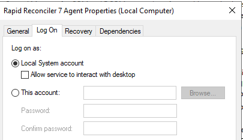
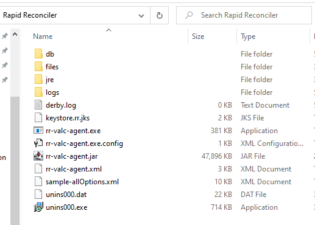
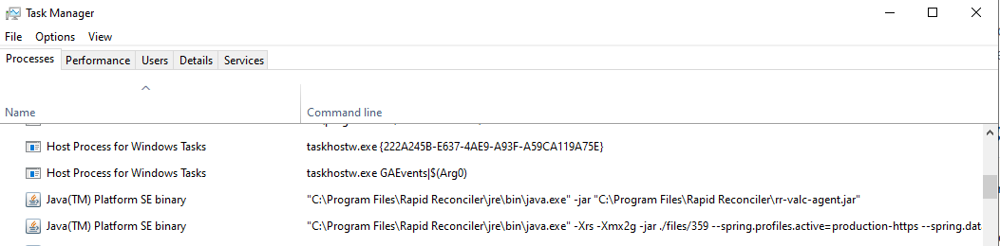

RR Agent reference
What the agent is, what it installs on a customer’s server, what processes it runs, and the operational signals that tell you whether it’s healthy.
Starter reference compiled from existing repo docs (cert-management, server-migration, install-scenarios, log-analyzer rules) and a real install layout. The Troubleshooting & gaps topic lists open questions for engineering to fill in.
Topics
| Topic | What it covers |
|---|---|
| Overview | What the RR Agent is, where it sits in the network, and the three traffic flows around it. |
| Installation | Windows services, install directory layout, and what each file under C:\Program Files\Rapid Reconciler\ does. |
| Processes & startup | The Java parent + per-database children visible in Task Manager, their command lines, and the deterministic boot sequence. |
| VALC communication | Outbound JMS-over-HTTPS to GSI’s public RR Servers, the operator-facing Manage Deploys + Domain URL tools, and the log signals that prove the channel is healthy. |
| Database | jTDS / SQL Authentication / port 1433, the RapidReconciler_Prod database, the App Server HTTPS port range, and the JDE read-only relationship. |
| Certificates | The Java keystore (keystore.rr.jks) at the install root, how the agent uses it, and what happens when the wildcard cert renews. |
| Logs & monitoring | The three log file patterns, what a healthy steady-state log looks like, and the periodic log-folder cleanup procedure. |
| Troubleshooting & gaps | Common failure modes with their fixes, plus a consolidated list of open questions for engineering. |
Related documents
See SSL Certificate & DNS Management for the wildcard-cert lifecycle, DNS A-record process, and the VALC Manage Deploys cadence that pushes updates to every agent. See Installing a Client in VALC for the install-time procedure where the customer’s domain URL is provisioned and the agent build is first pushed. See Installing the Production Database for the SQL Server side of an install — the agent connects to whatever this procedure stands up. See Install Troubleshooting for the searchable index of install-time scenarios, including the agent-services-not-running scenario. See Server Migration for the procedure that moves an existing agent install to a new host (the doc that surfaced the canonical install path and log filenames). See the Log Analyzer tool — paste an agent.out.log file and the same classification rules described in Logs & monitoring drive its verdict.
Overview
The RR Agent is the runtime that GSI installs on each customer’s application server. It is the bridge between the customer’s on-premise database server(s) and the RapidReconciler back-end at GSI (VALC). One agent on one server can serve multiple RapidReconciler databases — Prod, Test, Dev, Train — each running as its own child Java instance.
What the agent does
- Registers a Windows service that survives reboots and Windows updates.
- Connects out to GSI’s RR Servers over JMS-over-HTTPS, joins a client queue, and waits for instructions.
- Spawns a child Java process for each RR database the customer runs.
- Reports heartbeats, instance health, port assignments, and log shipments back to GSI.
- Uses the GSI wildcard SSL certificate (
*.getgsi.com) to identify itself.
Network topology at a glance
The agent runs on the RR Application Server inside the customer’s internal network. Three traffic flows around it:
| Direction | Path | Transport |
|---|---|---|
| Outbound (agent → GSI) | Agent through the customer’s firewall to public GSI RR Servers at rr-valc-spa.cloudapp.net and rr-spa.cloudapp.net. |
JMS-over-HTTPS. How the agent registers with VALC and receives instructions. |
| Inbound (end user → agent) | End-user browser hits GSI’s Internet-facing UI Interface Server at rrprod-[companyname].getgsi.com; after login, the SPA connects through to the customer’s App Server on a port assigned per RR database. |
HTTPS. The per-database port range (32145–49152) must be opened on the customer’s internal network. |
| Internal (App Server → DB) | Each data-services child reaches the RR Database Server using jTDS over SQL Authentication on port 1433. The DB Server’s Integration Services in turn read JDE business data read-only from the customer’s JDE Database Server. | JDBC / SSIS. |
Installation
What the installer puts on disk and into Windows.
Installer characteristics
Confirmed by inspecting the shipped rr-agent-setup-x64.exe with innoextract.
| Property | Value |
|---|---|
| Installer engine | Inno Setup 5.5.6 |
| Digital signature | None. The shipped installer is unsigned, so SmartScreen and aggressive Group Policy / AV will flag it. Customers may need to "More info → Run anyway" on first launch, or have IT temporarily whitelist the binary. |
| Bundled JRE | Oracle Java 1.8.0_45 (commercial build, x64). The agent doesn’t use the system Java — it ships and runs its own. Note this is a 2015-vintage JRE that hasn’t received public Oracle security updates since 2016; engineering question listed in Troubleshooting & gaps. |
| Service wrapper | WinSW — the open-source Windows Service Wrapper by Kohsuke Kawaguchi (same wrapper Jenkins ships). The rr-valc-agent.exe in the install root is the WinSW v2 binary; its config sits next to it as rr-valc-agent.xml. |
| Total files installed | ~203 (most by count being the bundled JRE) |
| Agent JAR size | 46.8 MiB (rr-valc-agent.jar, Spring Boot fat-JAR) |
Windows service
The installer registers one Windows service via WinSW. It should show Running with Startup type: Automatic in services.msc.
| Service property | Value |
|---|---|
| Service name (sc.exe ID) | rr-valc-agent |
| Display name | Rapid Reconciler 7 Agent |
| Description | Manages Rapid Reconciler services and updates |
| Executable | <install>\jre\bin\java.exe -jar <install>\rr-valc-agent.jar |
| Start mode | Automatic |
| Stop timeout | 10 seconds (before forced kill) |
| Failure recovery | Restart after 10s → Restart after 30s → Reboot |
| Service account | LocalSystem by default. The shipped WinSW config has no <serviceaccount> element, so Windows registers the service under LocalSystem at install time. IT can change this post-install via services.msc → Properties → Log On if a customer policy requires a dedicated service account — if you do, ensure that account has read/write on the install root and the JDBC connectivity permissions documented in Database. |

rr-valc-agent row (display name Rapid Reconciler 7 Agent) should show Running with an assigned PID. There is no second “Services”-named service to look for.
Older docs and the original Agent services not running scenario reference a second Windows service called RapidReconciler Services. The current installer (post-WinSW migration) registers only the one service above. What the older docs were calling "RapidReconciler Services" is actually the agent’s spawned child java.exe processes (one per RR database) running as children of the parent agent, not as separate Windows services — they appear in Task Manager but not in services.msc. See the Processes & startup topic for the parent/child model.
Install directory
Default install path: C:\Program Files\Rapid Reconciler\. Real contents from a working customer install:
C:\Program Files\Rapid Reconciler\ ├── db\ ← local Apache Derby database (agent state) ├── files\ │ └── <version>\ ← deployed data-services bundle, e.g. files\359\ │ ← updated through VALC Manage Deploys ├── jre\ │ └── bin\java.exe ← bundled JRE used by agent and data services ├── logs\ ← wrapper / out / err log files ├── derby.log ← Apache Derby's own log file ├── keystore.rr.jks ← Java keystore: cert + private key ├── rr-valc-agent.exe ← Windows-service wrapper ├── rr-valc-agent.exe.config ← wrapper config ├── rr-valc-agent.jar ← the agent itself (Spring Boot JAR) ├── rr-valc-agent.xml ← agent configuration ├── sample-allOptions.xml ← reference template, all available options ├── unins000.exe ← Inno Setup uninstaller └── unins000.dat ← installer manifest

db, files, jre, logs) are populated at install time. The two unins000.* files at the bottom are Inno Setup’s auto-generated uninstaller.Notable files
| File / folder | What it is | When IT touches it |
|---|---|---|
rr-valc-agent.exe |
The Windows-service wrapper. This is the executable the Service Control Manager actually starts; it in turn launches jre\bin\java.exe with the agent JAR. |
Rarely directly — controlled via services.msc. |
rr-valc-agent.exe.config |
XML config for the service wrapper (working directory, log routing, JVM launch parameters). | Only if changing wrapper-level behavior — rarely needed. |
rr-valc-agent.jar |
The agent’s compiled application JAR. Spring Boot binary. | Updated by VALC Manage Deploys; not hand-edited. |
rr-valc-agent.xml |
The WinSW service configuration — not a custom RR config schema, just the standard WinSW XML config that defines how Windows runs the service. Contents (verbatim from the shipped installer): <id>rr-valc-agent</id>, <name>Rapid Reconciler 7 Agent</name>, <executable>%BASE%\jre\bin\java.exe</executable>, <arguments>-jar "%BASE%\rr-valc-agent.jar"</arguments>, <startmode>Automatic</startmode>, three <onfailure> actions (restart 10s → restart 30s → reboot), <stoptimeout>10 sec</stoptimeout>, <logpath>%BASE%\logs</logpath>, <log mode="roll-by-time"><pattern>yyyyMMdd</pattern></log>, and <env name="RRAGENT_HOME" value="%BASE%"/>. Per-customer runtime configuration (DB credentials, VALC endpoint, port assignments) lives inside the agent JAR and is initialised at install time / managed via VALC Manage Deploys — not in this file. |
Rarely. Only edited when changing service-level behavior (failure-recovery policy, log rotation pattern, env vars). Per-customer config is not here. |
sample-allOptions.xml |
Reference template showing every configurable option (with defaults / sample values). Useful for diff’ing against rr-valc-agent.xml to see what’s been overridden. |
Read-only reference. |
keystore.rr.jks |
Java KeyStore (JKS). Holds the certificate and private key the agent presents on its inbound HTTPS listeners and when authenticating to VALC. Refreshed during cert renewals. | Replaced by VALC Manage Deploys when the wildcard cert is renewed. Not hand-edited. |
db\ + derby.log |
Embedded Apache Derby database the agent uses for its own local state (deploy history, queue identifiers, pending work). derby.log is Derby’s startup/shutdown log — not part of the agent log set in logs\. |
Don’t touch directly. Stuck states are typically resolved by a clean uninstall/reinstall, which rebuilds db\ from scratch. |
files\<version>\ |
The deployed data-services bundle (one folder per installed version). The data-services children -jar against this folder. Version number bumps each time VALC pushes a new build. |
Replaced/added by VALC Manage Deploys; not hand-edited. |
jre\ |
Bundled JRE both the agent and the data-services children run on. The install ships its own JRE so the agent doesn’t depend on a system-wide Java install. | Updated by VALC Manage Deploys when GSI bumps the JRE. Don’t replace manually. |
logs\ |
Agent + per-instance log files. See the Logs & monitoring topic. | Periodic cleanup procedure (stop service → delete folder → restart). |
unins000.exe + unins000.dat |
Installer-generated uninstaller (Inno Setup). Running unins000.exe removes the install. |
Only during a clean uninstall. |
Processes & startup
What runs on the App Server when the service is up, and the deterministic sequence the agent walks every time it starts.
Process model
The Windows service runs Java processes using the JRE bundled with the install. Open Task Manager → Details (or Process Hacker) and you’ll see one parent + N children.
Parent: the agent
One java.exe running the agent JAR. This is what talks to VALC.
"C:\Program Files\Rapid Reconciler\jre\bin\java.exe" -jar "C:\Program Files\Rapid Reconciler\rr-valc-agent.jar"
Children: data services (one per RR database)
One java.exe per RR database. Each runs the version-pinned data-services bundle and connects to its dedicated database. The data-services job is to move data between the RR database and the SPA the end user sees in the browser.
"C:\Program Files\Rapid Reconciler\jre\bin\java.exe" -Xrs -Xmx2g -jar ./files/<version> --spring.profiles.active=production-https --spring.datasource.url=jdbc:jtds:sqlserver://<db-server-ip>:1433;databaseName=RapidReconciler_Prod --spring.datasource.jdbcUrl=jdbc:jtds:sqlserver://...
What the flags mean:
-Xrs— reduce JVM signal handling so the Windows Service Control Manager can stop the process cleanly.-Xmx2g— 2 GB maximum heap per data-services child. A customer running 4 RR databases reserves roughly 8 GB of heap just for data services.-jar ./files/<version>— the deployed data-services bundle. The version number (359in the running example) determines which UI features the data services support — bumped through VALC Manage Deploys whenever the UI ships a change that needs back-end support.spring.profiles.active=production-https— production profile, HTTPS endpoints active.spring.datasource.url/spring.datasource.jdbcUrl— jTDS JDBC URL pointing at the RR Database Server (default SQL Server port 1433), withdatabaseName=RapidReconciler_Prodidentifying which RR database this child serves.

C:\Program Files\Rapid Reconciler\jre\bin\java.exe. The top row is the parent (-jar rr-valc-agent.jar). The bottom row is one data-services child (-Xrs -Xmx2g -jar ./files/359 --spring.profiles.active=production-https …). A 4-database customer would show 1 parent + 4 children, all with the same -Xrs -Xmx2g flags but pointing at distinct --spring.datasource.url JDBC URLs.Supervision
The parent agent owns the children. Stop the rr-valc-agent Windows service in services.msc and every java.exe — agent and data-services — terminates with it. Restart the service and they all come back up. Don’t kill java.exe processes from Task Manager — always use the service manager so the wrapper logs the stop and the children shut down cleanly.
A customer running 2–4 RR databases will show 3–5 java.exe processes in Task Manager (1 agent + 1 per database).
When the UI ships a feature that needs back-end support — adding a column to a report, exposing a new field, changing how a calculation is computed — a matching data-services update is deployed through VALC to every customer agent. A missed deploy leaves that customer’s data services on the old version and the new UI feature can’t resolve. See the missed-rollout pattern in Cert Management → Common Issues.
Startup sequence
When the rr-valc-agent service starts, the log records a deterministic sequence. Each of these is a known-healthy signal recognised by the Log Analyzer:
- Pre-start checks — before launching the Java process, the wrapper verifies:
Service is not running: [OK]— no orphaned process from a prior run.Instance JAR package runnable: [OK]— the agent JAR is present and parseable.Database connectivity: [OK]— the DB credentials work.
- Spring Boot bootstrap — standard Spring Boot banner, Logback configurator output.
Startup preconditions met, proceeding— the wrapper hands off to the application.Database connected with success— the agent has opened its primary DB connection.Started AgentApplication in <N> seconds— the agent itself is up.Try connect to VALC→Connected to VALC ... queue— agent registers with VALC.- For each RR database:
Starting instance: ServicesInstance— agent prepares the child instance.Executing: [.../java.exe, -jar, ...]— child Java process spawned.Checking if instance is up attempt number <N>— agent polls the child’s health endpoint until it responds. TheHealthServiceImpl ... Could not load health endpoint ... Connection refusedERROR lines during this window are expected — the child hasn’t bound its HTTPS port yet. They stop once the child is up.Started ClientServicesApplication— the child is up.Instance that runs on <db> is RUNNING!— the agent confirms it.Warning VALC that database <db> runs on port <n>— VALC is told where to route SPA traffic.
- Steady state —
Sending heartbeat,Sending company sync, and routine status checks fire continuously.
If startup hangs, the log is the first place to look — identify which step the log stops at, and the remediation almost always falls out of that.
VALC communication
VALC is the GSI-side back-end that manages all RR customer deployments. The agent connects outbound from the customer’s App Server, through their firewall, to GSI’s public RR Servers over JMS-over-HTTPS, and stays connected for the life of the service.
Public RR Server endpoints
| Hostname | IP | Role |
|---|---|---|
rr-valc-spa.cloudapp.net |
168.62.49.184 | VALC SPA back-end. Manages deployments, routes customer traffic, hosts the customer-management UI. |
rr-spa.cloudapp.net |
52.170.255.174 | RR SPA UI host. Serves the customer-facing SPA assets that load in the browser. |
Staging counterparts (e.g. staging-valcspa.cloudapp.net, staging-rr-spa.azurewebsites.net) are used for pre-release validation before pushing builds to the production endpoints above.
Key log signals
Try connect to VALC— the agent is attempting to establish the connection.Connected to VALC ... queue— the agent has successfully joined its client queue.Client queue - <uuid>— the unique queue ID assigned to this customer’s agent.Sending heartbeat— recurring health ping. Should appear continuously for the life of the service.Warning VALC that database <name> runs on port <n>— the agent telling VALC which port each instance is listening on so VALC can route SPA traffic correctly.Sending company sync— the agent is pushing JDE company / business-unit metadata to VALC for the SPA to consume.
Operator-facing tools
From the VALC side, two operator-facing tools touch the agent:
- Manage Deploys — pushes an updated data-services bundle (the JAR under
files\<version>\) and/or refreshed keystore to one or more customer servers. Used whenever a UI change ships that needs matching back-end support and during cert renewals. After a successful deploy, the version number infiles\increments and the next agent restart picks up the new bundle. - Domain URL — each customer is assigned a unique URL (e.g.
rrprod-customername.getgsi.com) at install time. VALC maintains the mapping from URL → customer agent.
Heartbeat cadence: how often the heartbeat fires (every N seconds / minutes)? VALC-outage behavior: how the agent reacts if rr-valc-spa.cloudapp.net is unreachable — retry, queue, give up? Are the retries visible in the log? Authentication: over the JMS-over-HTTPS channel, is it mutual TLS via the keystore, a signed token, a shared secret?
Database
The data-services children connect to the RR Database Server (MS SQL Server 2012 or later) using the jTDS JDBC driver over SQL Authentication on the standard SQL Server port 1433. A single agent can host multiple RR databases — one data-services child per database.
Database naming
RR databases are named RapidReconciler_Prod on every install (this is the canonical name set by the SQL install scripts; older docs sometimes show a rrv7-<customer> pattern, but that naming is not what the install produces).
The connection-string fragment that determines which database a given data-services child serves:
jdbc:jtds:sqlserver://<db-server-ip>:1433;databaseName=RapidReconciler_Prod
HTTPS port range (App Server ↔ end-user browser)
Each data-services child also opens an HTTPS listener on the App Server so the SPA can call it. Those ports are assigned from the range 32145 – 49152. Specific port numbers are chosen at install time (one per RR database) and must be opened on the customer’s internal network — the firewall has to allow end-user PCs to reach the App Server on whichever port each RR database lands on.
The agent announces each child’s assigned port to VALC at startup so the SPA back-end knows where to route customer traffic (look for the Warning VALC that database <db> runs on port <n> log line).
JDE read access
The agent does not talk to the customer’s JDE database directly. The customer’s JDE Business Data is pulled into the RR Database Server by SQL Server Integration Services (SSIS) running on the DB Server, using read-only credentials with a non-expiring password. The agent only ever reads RR-side tables, not raw JDE tables.
Hibernate noise
The agent uses Hibernate over JDBC. WARN-level SqlExceptionHelper messages are routine — specifically the schema-management one saying "Database not created, connection made to existing database instead" — and shouldn’t trigger an alert. The Log Analyzer classifies these as benign.
SQL login permissions the data-services need (db_owner on the RapidReconciler_Prod database? a more restricted role?), where the login’s username + password are stored (in rr-valc-agent.xml, wrapper config, VALC-pushed config?), and what happens when the DB server is unreachable at startup vs. mid-run (retry, backoff, give-up).
Certificates
The cert + private key the agent uses live in C:\Program Files\Rapid Reconciler\keystore.rr.jks — a standard Java KeyStore (JKS) at the install root.
How the agent uses the cert
- Each data-services child serves HTTPS to the SPA on its assigned port. The cert presented by that HTTPS listener is read out of
keystore.rr.jks— the GSI wildcard cert (*.getgsi.com). That’s what makes a customer-specific URL likerrprod-customername.getgsi.comresolve and validate cleanly in the browser. - The agent itself uses the same keystore when authenticating outbound to VALC. TODO — confirm exact mechanism (mTLS, signed JWT, etc.).
When the wildcard cert is renewed
- GSI updates the backend cert (handled by GSI Operations / I/T).
- VALC Manage Deploys pushes a refreshed
keystore.rr.jks(and any accompanying data-services bundle update) to every customer agent. - Customers may need a browser hard-refresh / cert-cache flush to pick up the new cert.
If one customer gets net::ERR_CERT_DATE_INVALID in the SPA console while every other customer is fine, suspect a missed VALC deploy — this server is still running the older keystore + bundle. See Cert Management → Common Issues.
Logs & monitoring
Log files
All agent logs live in C:\Program Files\Rapid Reconciler\logs\. Three filename patterns matter:
| File | What it contains | When to look at it |
|---|---|---|
rr-valc-agent.wrapper.log |
Windows-service wrapper output — service start/stop, JVM launch arguments, native crashes. | The service won’t start, or starts and immediately stops. |
rr-valc-agent_YYYYMMDD.out.log |
The main agent log — INFO / WARN / ERROR from the Spring Boot application. Rotated daily. | The service is running but the customer reports incorrect behavior. This is the file to paste into the Log Analyzer. |
rr-valc-agent_YYYYMMDD.err.log |
stderr capture from the Java process — uncaught exceptions, JVM-level errors. | Empty in a healthy environment. Non-empty .err.log always warrants investigation. |
Log levels: standard INFO, WARN, ERROR, DEBUG, TRACE. The agent normally runs at INFO.
Rotation mechanism
Rotation is driven by WinSW (the service wrapper), not by the application. rr-valc-agent.xml declares <log mode="roll-by-time"><pattern>yyyyMMdd</pattern></log> — WinSW closes the current .out.log / .err.log at midnight and opens a fresh pair with the new date in the filename. No size cap, no keepFiles retention setting in the shipped config — old dated logs accumulate indefinitely until the maintenance procedure below is run, which is why the procedure exists.
Log folder maintenance
Dated .out.log files accumulate one per day and the folder will grow indefinitely if left alone. The supported maintenance procedure is:
- Open
services.mscand stop therr-valc-agentservice. Everyjava.exe(agent + all data-services children) terminates. - Delete the entire
C:\Program Files\Rapid Reconciler\logs\folder — both contents and the folder itself. - Start the service again. A fresh
logs\folder is created and a new pair ofwrapper.log+ dated.out.logbegin populating.
Recommend this cleanup on a periodic cadence (monthly, quarterly — whatever the customer’s ops cadence allows). It’s a routine maintenance task, not an incident response.
What a healthy log looks like
In steady state, the agent log scrolls with a tight repeating pattern: a heartbeat to VALC every ~30 seconds, a company-sync ping ~1 second later, then 30 seconds of silence, then the next heartbeat. The sample below is from a real customer’s production log (companies / database names / UUID values scrubbed). The first heartbeat carries one RunningInstanceState entry per child java.exe — this customer has four RR databases, so four entries:
Sending heartbeat / Sending company sync pair is the heartbeat-pulse rhythm. The WARN-coloured Hibernate SqlExceptionHelper lines are expected noise (the schema generator correctly skipping creation because Apache Derby’s local db already exists). The Sending file … .out.log line is the once-an-hour-ish log ship to VALC. The RunningInstanceState blocks confirm each child is up=true on its assigned high port.Summary of what to expect:
- Heartbeat —
INFO … Sending heartbeat. States: […]. Most frequent — about every 30 seconds. The embeddedRunningInstanceStatelist has one entry per childjava.exe, each on a distinct port in the App Server’s HTTPS range. - Company sync —
INFO … Sending company sync. Fires ~1 second after each heartbeat. Periodic push of JDE company / business-unit metadata to VALC. - Service-instance status checks —
INFO … ServiceInstance … monitoring <N> instance. The agent confirming each child is still up.
Occasional benign noise:
- Hibernate
SqlExceptionHelperWARNs — the schema generator correctly skipping creation because the Apache Derby localdbalready exists. - Log shipping —
INFO … Sending file … .out.log. The agent shipping its own log file back to VALC via the sameValcOutboundJMS channel as heartbeats. Roughly hourly cadence observed in production logs. - Health-endpoint
Connection refusedERRORs during startup — expected for a few seconds per instance while the child HTTPS listener comes up; concerning if they continue indefinitely with no matchingStarted ClientServicesApplication.
For a turn-key way to classify any agent log, paste it into the Log Analyzer — the same rules described here drive its verdict.
Log shipping destination: the "Sending file ... .out.log" log line implies an upstream target. Which RR Server endpoint, on what cadence, and is it the same JMS channel or a separate transfer?
Troubleshooting & gaps
Common failure modes
| Symptom | Likely cause | Where to look |
|---|---|---|
The rr-valc-agent Windows service is stopped or won’t start. |
Windows update reboot interrupted shutdown; the LocalSystem account (or a custom service account if IT changed it) hit a permission issue on the install root or DB; corrupted rr-valc-agent.xml; or the WinSW recovery loop ran through its three actions (restart, restart, reboot) and gave up. |
See the Agent services not running install scenario. |
Services running, but SPA shows net::ERR_CERT_DATE_INVALID in console. |
Cert renewal happened, but the accompanying agent update missed this server. Other customers work fine. | See Cert Management → Common Issues and the customer-facing Browser shows “Not Secure” warning runbook. |
| SPA loads but can’t reach its data. | Database server unreachable from the app server; or the customer’s internal IP changed and VALC still has the old one. | Agent log: look for Database connectivity: [OK] vs. retries. Cross-check VALC config. |
| Nightly job runs much longer than usual. | SQL Server side stuck on a blocking transaction or full TempDB log — not an agent problem per se. | See the customer-facing RapidReconciler job running longer than usual runbook. |
.err.log has content. |
JVM-level error — OutOfMemory, missing JAR, native crash. | Open the .err.log and the corresponding .wrapper.log. Capture both and email rrsupport@getgsi.com. |
Open questions for engineering
Items still needing engineering input. (The network topology, port range, RapidReconciler Services role, install-directory layout, notable files, process model, JVM heap, log-maintenance procedure, JDBC driver, DB naming, keystore location, DB platform / auth, service-account default, and rr-valc-agent.xml contents questions from the initial draft have all been answered and are folded into the topics above.)
- Bundled JRE refresh policy — the installer ships Oracle Java 1.8.0_45 (commercial, May 2015). This JRE hasn’t received public Oracle security updates in ~9 years. Is there a refresh on the roadmap, and how does it get to existing installs (VALC Manage Deploys, full re-install, in-place)? Customers running aggressive vulnerability scanners will flag
jre\bin\*.dllas out-of-support. - Installer signing — the shipped
rr-agent-setup-x64.exeis unsigned. SmartScreen will warn on first run, and customer Group Policy or EDR products may block it outright. Worth signing for the next build, or at minimum publishing the SHA-256 hash so customers can verify the download out-of-band. - Log-ship destination — the “
Sending file … .out.log” line in a production log confirms cadence (roughly hourly) and channel (samec.r.agent.jms.ValcOutboundJMS channel as heartbeats). Open question is the endpoint on the RR Server side: which URL/queue receives the shipped log, and what happens to it post-ingest (rotation, retention, indexing for support search)? - VALC outage behavior — heartbeat cadence confirmed as ~30 seconds in a production log (heartbeat + company sync alternating, ~30 s apart). Open question is how the agent reacts when
rr-valc-spa.cloudapp.netis unreachable mid-run (retry interval, max retries, fall back to queued local state, or just keep trying indefinitely?). - Agent ↔ VALC auth mechanism — over the JMS-over-HTTPS channel, is authentication mTLS using the cert in
keystore.rr.jks, a signed token, a shared secret, something else? - DB-server unreachable behavior — startup vs. mid-run handling. Retry/backoff/give-up.
- SQL login permissions — the minimum SQL Server role(s) the RR app login needs (db_owner on the
RapidReconciler_Proddatabase? something more restricted?). Also where the login’s username + password are stored. - Apache Derby local state — what does the agent persist in
db\? Specifically: deploy history, VALC client-queue UUID, queued messages while VALC was unreachable, audit log? Useful when triaging stuck states.